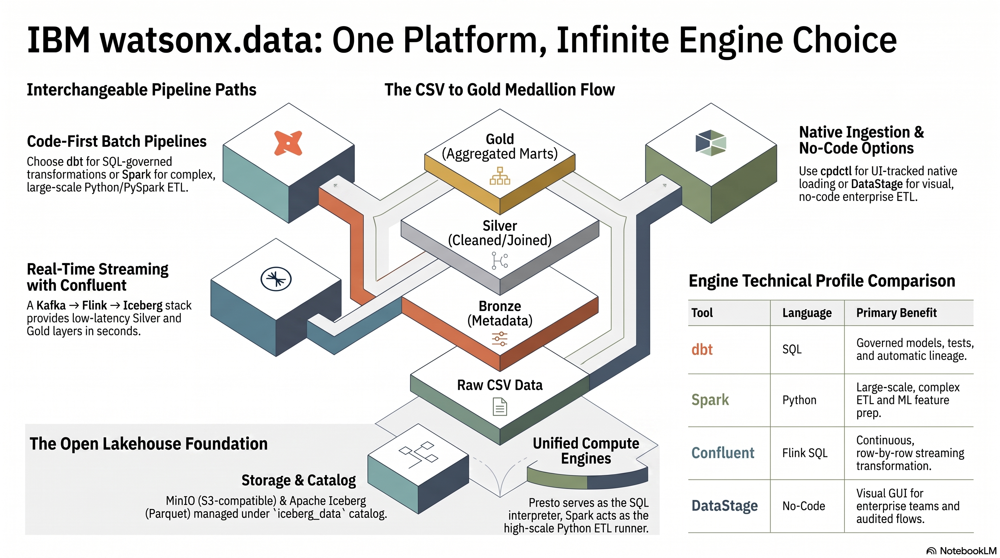

Three full pipelines and one native loader — build a medallion with dbt, Spark, or Confluent streaming
A hands-on workshop for anyone new to watsonx.data. dbt, Spark, and Confluent (Kafka → Flink → Iceberg) are three interchangeable, full medallion pipelines; cpdctl is an ingestion-only loader (like dbt seed) you pair with dbt or Spark. You load the same four CSV files and prove all three paths reach the identical Gold. Then an optional Enterprise track shows the IBM upgrades — watsonx.data Intelligence and Integration. No prior experience required.
{kind=link}
{kind=link}
{kind=link}
{kind=link}
{kind=link}
{kind=link}

iceberg_data catalog).The tools at a glance
New to this stack? Here is each tool in one line — what it is, and when you reach for it.
| Tool | In one line | Reach for it when… |
|---|---|---|
| dbt | SQL transforms that run on the Presto engine | Your logic fits in SELECT and you want tests, docs, and lineage for free |
| Spark | Python (PySpark) ETL that runs on the Spark engine | Data is large, or the logic needs Python/ML/streaming/custom parsing |
| Confluent | Streaming medallion: Kafka → Flink SQL → Iceberg | Data arrives continuously and you want Silver/Gold within seconds |
| DataStage | No-code visual ETL that builds the gold marts | An enterprise GUI team wants the same Gold without writing code |
| cpdctl | An ingestion-only loader (like dbt seed) |
You want a fast, no-code raw load that shows up in the watsonx.data UI history |
| Iceberg | The open table format — i.e. the storage | Always — every table here is an Iceberg table, whichever tool wrote it |
| watsonx.data | The lakehouse platform that ties it all together | Always — it provides the catalog, the engines, and the object storage |
dbt, Spark, and Confluent are three interchangeable full pipelines; cpdctl only loads raw data and is paired with one of them; DataStage is the no-code engine for the Confluent gold build. Airflow, Metabase, and OpenMetadata are optional open-source add-ons (orchestration, BI, lineage) — skip them on a first pass. The optional Enterprise tab maps each open-source tool to its IBM upgrade (watsonx.data Intelligence & Integration). Not sure which to run? See When to use which.
What you will learn
Workshop learning goals
By the end of this workshop you will be able to:
- Explain what watsonx.data is and how its parts (catalog, engines, object storage) fit together
- Describe three full medallion engines (dbt, Spark, Confluent streaming) plus the cpdctl loader, and choose the right one for a given workload
- Run a governed SQL pipeline with dbt and Presto, including tests and lineage
- Run a distributed Python ETL job with Spark and verify its output with SQL
- Stream data through Kafka → Flink → Iceberg and prove all three gold layers match
- Map each open-source tool to its IBM enterprise upgrade (watsonx.data Intelligence & Integration)
What we are building
A small online shop has four CSV files: customers, products, orders, and order items — 1,704 rows
in total (50 customers, 20 products, 500 orders, 1,134 order items). Three of the paths (dbt, Spark,
and Confluent) are full medallion engines: each takes the CSVs all the way to Bronze/Silver/Gold (in
dbt_demo_*, spark_demo_*, and confluent_demo_* respectively). cpdctl is an ingestion-only
loader — like dbt seed — that lands the raw CSVs in spark_demo_cpdctl_raw and stops there; you
turn that into a medallion by running dbt or Spark over it. At the end, you prove all three gold
layers are identical with scripts/reconcile_gold.py.
flowchart TB
csv["4 CSV files\ncustomers · products · orders · order_items"]
csv --> dbt_path["Path A — dbt\nSQL + Presto (batch)"]
csv --> spark_path["Path B — Spark\nPySpark ETL (batch)"]
csv --> conf_path["Path C — Confluent\nKafka → Flink (streaming)"]
csv --> cpdctl_path["cpdctl\nIBM CLI (ingest only)"]
dbt_path --> bronze["Bronze\ndbt_demo_bronze"]
spark_path --> spark_bronze["Bronze\nspark_demo_bronze"]
conf_path --> conf_silver["Silver\nconfluent_demo_silver"]
cpdctl_path --> ingest_raw["Raw / Ingest\nspark_demo_cpdctl_raw"]
bronze --> silver["Silver\ndbt_demo_silver"]
spark_bronze --> spark_silver["Silver\nspark_demo_silver"]
silver --> gold["Gold\ndbt_demo_gold"]
spark_silver --> spark_gold["Gold\nspark_demo_gold"]
conf_silver --> conf_gold["Gold (Spark or DataStage)\nconfluent_demo_gold"]
ingest_raw -. "transform with dbt or Spark\n(post-action)" .-> dbt_path
ingest_raw -. "transform with dbt or Spark\n(post-action)" .-> spark_path
gold --> compare["reconcile_gold.py\nall gold layers identical"]
spark_gold --> compare
conf_gold --> compareThe paths at a glance
Every path reads the same source files and produces Iceberg tables in Parquet format. The difference is which tool drives the work and what governance features come with it.
| Path | Tool | Language | Batch or streaming | Best for |
|---|---|---|---|---|
| A — dbt | dbt + Presto | SQL | Batch | Governed analytics, built-in tests, column lineage |
| B — Spark | PySpark on watsonx.data Spark engine | Python | Batch | Large files, distributed ETL, complex transformations |
| C — Confluent | Kafka + Flink SQL → Iceberg | Flink SQL (+ Spark/DataStage gold) | Streaming | Continuous data, low-latency Silver/Gold |
| D — DataStage | IBM DataStage flow | No-code GUI | Batch | Enterprise visual ETL for the gold build |
| cpdctl | IBM CLI (cpdctl) |
Shell | Batch load | Native UI-tracked raw ingestion, no code |
dbt, Spark, and Confluent write full medallions to dbt_demo_*, spark_demo_*, and
confluent_demo_*; cpdctl writes only raw tables to spark_demo_cpdctl_raw. The three full paths
are proven identical at the gold layer with scripts/reconcile_gold.py.
Why several paths instead of one?
Real teams choose different tools for different reasons — latency, file size, skill set,
governance, or whether ingestion needs to show in the UI. dbt, Spark, and Confluent are
complete, interchangeable pipelines; cpdctl is an ingestion loader (like dbt seed) you pair
with dbt or Spark. The whole point of the demo is that the business logic, not the tool,
defines the result — every engine reaches the same gold.
The medallion pattern
The medallion pattern is a way to organize data by quality level, moving from raw files to
production-ready analytics tables in three named layers. Each layer adds something the previous
one lacked — metadata, type safety, or business logic. The dbt and Spark paths follow the full
Bronze → Silver → Gold progression. cpdctl ingests only the Raw layer (spark_demo_cpdctl_raw); to
carry it through Bronze → Silver → Gold you run dbt or Spark transformations on the ingested data.
flowchart LR
raw["Raw CSV files\n(source files)"]
bronze["Bronze\ncopy + ingest metadata"]
silver["Silver\nclean + typed"]
gold["Gold\nbusiness marts"]
raw --> bronze --> silver --> gold| Layer | Plain-English meaning | What is added |
|---|---|---|
| Raw | The original CSV files exactly as exported from the shop system | Nothing — this is the starting point |
| Bronze | A first managed copy in the lakehouse | Ingest timestamp, source file name, batch ID |
| Silver | Clean, typed, validated business entities | Proper dates, numeric types, status enums, deduplication |
| Gold | Pre-aggregated answers to business questions | Daily sales totals, category rankings, customer lifetime value |
Table vs. view in the gold layer
In the dbt path, gold_daily_sales is a physical table (data stored on disk). The other
two gold objects — gold_category_performance and gold_customer_360 — are views (saved
queries that re-run on demand). The Spark path writes all gold outputs as physical Iceberg
tables. Both approaches are valid; the dbt mix shows how you choose per use case.
Workshop flow
Work through the pages in this order. Each step builds on the last.
-
Prepare (setup.md) — ~15 min Install Python dependencies, configure the watsonx.data connection, and verify access to the Presto endpoint at
ibm-lh-lakehouse-presto651-presto-svc.apps.watson.ibmas-zocp-techcluster.org:443. -
Understand the architecture (lineage.md) — read only See the full column-by-column lineage and how schemas relate. Then skim Table Formats (Iceberg vs Parquet vs Delta) and, for the streaming path, Streaming Medallion Explained.
-
Run Path A: dbt (dbt-demo.md) — ~20 min Create schemas, load seeds into
dbt_demo_raw, build Bronze/Silver/Gold models, run dbt tests, and query the gold layer. -
Run Path B: Spark (spark-demo.md) — ~15 min Upload the PySpark job and CSV files to MinIO, submit the job to the watsonx.data Spark engine, and verify the
spark_demo_*schemas. -
Run Path C: Confluent streaming (confluent-demo.md) — ~20 min Bring up the Kafka + Flink + Iceberg stack, stream the CSVs through raw → silver topics, sink to Iceberg, and build gold with Spark (or DataStage, Path D).
-
(Optional) Run cpdctl (ingestion.md) — ~10 min Use the IBM CLI to ingest the CSV files via the native watsonx.data ingestion API (raw load only), then check the ingestion history in the UI. Build a medallion by running dbt or Spark over
spark_demo_cpdctl_rawafterward. -
Compare results with SQL (sql-demo.md) Run side-by-side queries across the dbt, Spark, and Confluent gold schemas — or run
scripts/reconcile_gold.pyto prove all three are identical. -
(Optional) Explore lineage in OpenMetadata (openmetadata.md) Visualize the dbt lineage graph from seed tables through to gold marts.
-
(Optional) See the enterprise upgrades (enterprise/overview.md) How watsonx.data Intelligence (catalog, Manta lineage, data quality, masking) and Integration (DataStage, StreamSets, Databand) extend what you just built — with an honest comparison.
In a hurry?
Every command in the workshop, in order, lives on one page: Fast Track.
Complete the setup page before running any path
Paths A, B, and C all require a working connection profile and Python environment. Skipping the setup page is the most common reason commands fail.
The words you will keep seeing
watsonx.data
IBM's lakehouse platform — the environment where this workshop runs. It provides the catalog (index of all tables), query engines, and object storage access in one place.
Iceberg
The open table format used for every table in this workshop. It gives plain Parquet files database features: safe updates, snapshot history, and partition management.
Presto
The SQL query engine built into watsonx.data. dbt sends SQL to Presto, Presto executes it against the Iceberg catalog, and results come back as a result set.
dbt
A tool that turns SQL SELECT statements into managed data pipelines. You write each transformation as a .sql file; dbt runs them in the right order, tests them, and tracks lineage.
Spark
A distributed processing engine that runs Python (PySpark) jobs across multiple workers. Used in Path B to read CSV files from MinIO and write Iceberg tables.
cpdctl
The IBM Cloud Pak for Data CLI. In Path C it calls the watsonx.data ingestion API directly, producing an ingestion job that appears in the platform UI history.